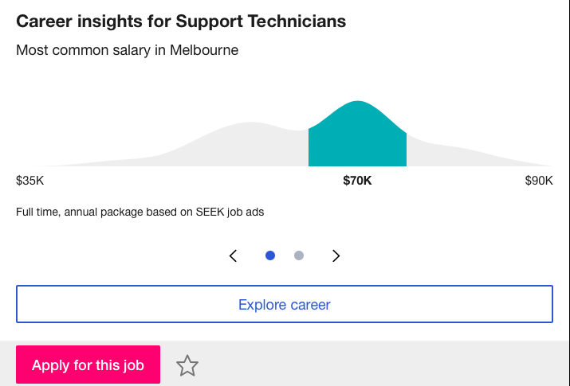
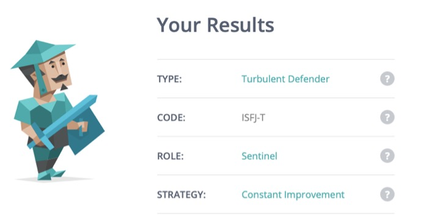
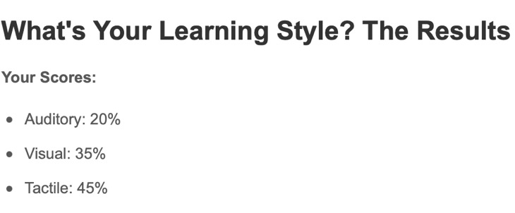
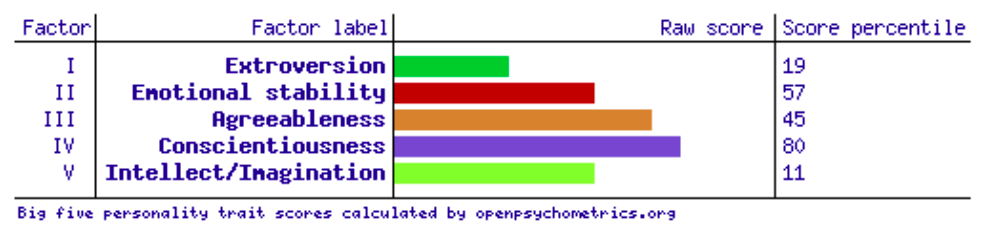

Hello, my name
is Biak Cuang
My details:
- Biak Hman Cuang Cuang (Biak)
- s3897181
- s3897181@student.rmit.edu.au

My Profile
Hi, my name is Biak, and I was born in Myanmar (Burma) and moved to Malaysia at about the age of 5. At the age of 10, we came to Perth, Western Australia before eventually moving here to Melbourne in late 2015. At home, we speak Chin, Falam and attend church a few times a week. I used to play soccer for a club (Maroondah United) but now I am more into basketball. I started education in grade 5 primary school and moved to several schools due to moving houses or coming to Melbourne.

Interest in IT
I always had a soft spot for IT ever since I was young, but education was hard back then. I don’t have much experience or knowledge in this field, but I adapt to this sort of things quickly. As the oldest in my family coming from another country, I had to adapt to things quicker and carry responsibility on the technology side. Whether it be helping my parents with resetting password or finding websites, apps etc. having that ability to help people really sparked my interest in IT and hopefully pursue it as a career. When I was young, I did a few IT classes where they taught me the fundamentals of computer, typing and apps such as Microsoft Word. I don’t have any experience in IT as my high school had no IT classes, but I did Networking for a year as a vet, which I found hard and wasn’t really what I excepted.Why I chose RMIT
I chose RMIT mostly due to recommendations by peers that have either gone themselves or is going. Also due to my own research RMIT has always been the one I wanted to attend as it has a good reputation and is well-known by everyone. As it’s ranked at the top in terms of global and local for the majority of courses, which is another reason I wanted to choose RMIT. Although the location is a bit far from my home, I am happy that I got into it as it was my first choice. My fellow peers from school and church all mostly went to RMIT and they all had positive things to say about the school, which most of them recommended as well for me to pick up. What do you expect to learn during your studies?
What I expect to learn
I expect to learn the basics of the IT world and more, to hopefully get me ready for my future career. As previously mentioned, I don’t have much experience or knowledge in this field, so I pretty much expect to learn everything as it will all be new to me. I expect to learn how IT is connected to everyday life and what we can do to improve it. I expect to learn programming, the basics of IT as well which are all essential in this field and a bit of security-related topics.
Ideal Job
 IT technicians collaborate with a support specialist to analyse and diagnose computer issues. They may also install relevant software and perform tests on computer equipment and applications when necessary. What makes this position appealing to me is the highly flexible hours whilst it maintains good pay. This position also offers to work in a new team to fulfil demands such as providing technical and advisory solutions to customers within and offering Gippsland and the greater metropolitan areas. The location of the job is also ideal as it is within regional Victoria. Also, the fact that it provides opportunities to expand skills, knowledge and career to further grow in IT careers if we wanted to take up another IT field of work.Why I chose RMIT
I chose RMIT mostly due to recommendations by peers that have either gone themselves or is going. Also due to my own research RMIT has always been the one I wanted to attend as it has a good reputation and is well-known by everyone. As it’s ranked at the top in terms of global and local for the majority of courses, which is another reason I wanted to choose RMIT. Although the location is a bit far from my home, I am happy that I got into it as it was my first choice. My fellow peers from school and church all mostly went to RMIT and they all had positive things to say about the school, which most of them recommended as well for me to pick up. What do you expect to learn during your studies?
What I expect to learn
I expect to learn the basics of the IT world and more, to hopefully get me ready for my future career. As previously mentioned, I don’t have much experience or knowledge in this field, so I pretty much expect to learn everything as it will all be new to me. I expect to learn how IT is connected to everyday life and what we can do to improve it. I expect to learn programming, the basics of IT as well which are all essential in this field and a bit of security-related topics.
Project Idea
The project will be creating a game using Unity. The game created will be a simple game of hangman which will offer both multiplayer as well as single player. The game will have many features to attract audiences and make them stay. The plan is to create a game which isn’t time-consuming yet addictive to get the audience hooked, so that people can play on the way to work or school whilst waiting for transport or in the car to pass time as it will also be educational to the younger children with learning spelling and English as well.Motivation
This will be a fun project, although it will be challenging - statistics have shown that over 2.4 billion are mobile gamers in 2020 and putting out a game for others to enjoy should be rewarding especially during a time of coronavirus and lockdowns so that people can have something fun to enjoy together. Using unity doesn’t require a highly skilled professional to be able to create a game therefore even with minimal skill we should be able to work together to successfully create a simple game of a hangman. If successful, in. this day and age we should be able to find a wide variety of customer due to the rapid rise and usage of mobile phone.Tools and technologies
Unity is a great engine for developing games although it has its flaws within the program, the engine is famous worldwide for developing games and apps as well. Unity is a cross-platform software which means we can develop games for many operating systems like PC, Android, iOS, and Linux. Unity can create 3D, 2D, Virtual Reality, Augmented Reality games and simulations. Unity gives the ability to creates games and experiences in both 2D and 3D, which has a powerful interface used in developing games and their cross-platform applications. Tools needed are Unity, which is a single download that can be licensed for a free or pro mode and the editor, which is the main Unity interface, supported on Windows, Linux and the OS X system. A two-button mouse with a clickable scroll wheel is also required for the program.
Project Description
The project aims to create a mobile game of hangman using unity engine. The game hangman is basically where one person thinks of a word, phrase or sentence and others tries to guess it by suggesting letters within a certain number of guesses. In this case, the game can either be multiplayer or single-player – therefore if it’s a single-player the word will be auto-generated by AI, giving hints of the category the word (such as soccer under the category sport) and if it’s multiplayer, a person will choose the word. By default, the person hanging should just be a stick figure, hanging on to balloons (about 5) in mid-air and each time the user guesses the wrong letter a balloon should pop – eventually, all balloons popping and the stick figure falling off and breaking all bones (meaning they lost the game). Overtime players should be able to unlock/purchase different venue such as a person hanging on a rope on top of the ocean with sharks ready to eat if it falls, space venue, sports venue all sorts should be added gradually depending on user’s feedback as well. I also think we should add a shop feature where user can purchase skins or different figure (e.g., Celebrities, Sports figure and many more) to give them something to grind towards whilst enjoying the game. This will allow them to show off to friends or simply enjoy themselves as they unlock their favourite figures. Purchases should be done by in-game currencies where user can complete level 1-2-3-4 etc. as the word generated by the computer should get harder each time, with users guessing the words right they should be rewarded with currencies that they can use. We will also need to come up with creative models and animations for the figures much like Fortnite where they have victory dance. We should be able to create basic death animations if the user fails to guess the word correctly and add more over time to have the audience engage in the game. As mentioned before the game will be a mobile game that runs in both android and ios to maximise our audiences. Games like this are addictive, fun and fast which means that we have to make sure the game runs smoothly and properly without too many issues. The main point of the game is for users to past time or enjoy it with the family or friends, to bring them joy by having friendly competitions. I think the challenging thing about this project will be learning Unity itself as well as programming and coding such C# or even the basics to be able to successfully create a game.
Skills required
Even though Unity doesn’t require that high level of coding and programming, it is still essential to at least know the basic to be able to create. Unity is a native C++-based game engine and codes are mostly written in C#, JavaScript or less frequently, Boo. To learn or have a basic understanding of C# will be a very handy skill to start using Unity. Another skill required is to be able to have a clear plan or idea for what you are doing and not lean on just that one project idea that you must do, in other words, you should be able to adjust and evolve depending on the situation. The Entity Component System (ECS) should also be learnt if possible, it represents a fundamental shift in the way that projects are developed in Unity, specifically the way things are scripted.Outcome
The outcome of the project will be a mobile-based game of Hangman that can be enjoyed by anyone at any time. The impact of this development is that it can be seen as educational which will be to help younger children with spelling and reading whilst also enjoying the gaming side of things. Not only younger children but this can be enjoyed by anyone with a mobile phone.
Personal Profile



What the test results mean
I think the results are pretty accurate and there are some things I need to improve on and change. What the result means for me is knowing what I am good at and not, so that I can build on skills that are required to work in a group or even myself. To prepare me the best for my future and keep improving on it.
How the results may influence my behaviour
Due to the results, it may influence my behaviour in a team to change for example starting a conversation, asking questions or having more involvement as seen in the results those are what I am lacking at times. As I prefer to work alone most of the times than in groups according to the test results, so knowing that - I expect my behaviour when in a team to change for the better to achieve the best possible outcome as a group.
What I should consider when looking for a team
I should take the results into account when forming a team by assessing my weakness and strong point such as finding someone who is more vocal and can lead a group. As being in the same group with similar personalities may hinder our productiveness. From the results I got, I can tell what I need to work on or the type of people who I should work with to bring the best out of a team.